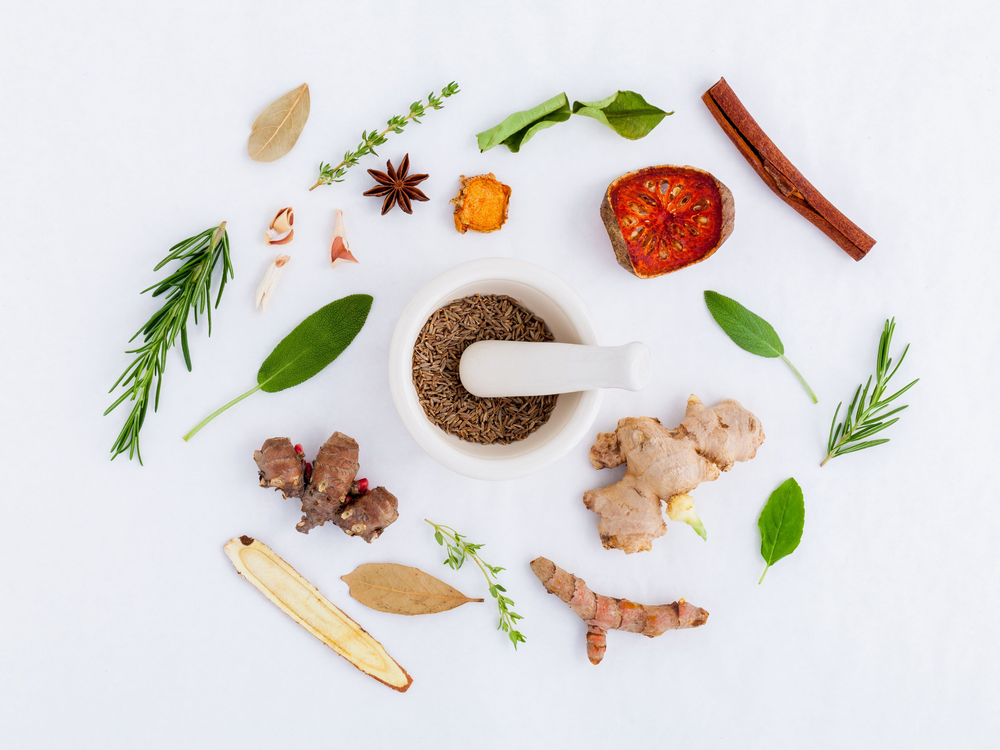

季節、天候、体調によって
人間の状態は毎日変わるもの。
店名の "Ti Sane"（ティサンヌ）は
ハーブティーを意味する "Tisane（ティザーヌ）"
健康を意味する "Santé（サンテ）" を合わせ、
ハーブティーでみなさまの健康を応援したいという気持ちで名づけました。
今日のあなたに最適なハーブティーと
栄養のあるお食事をご用意し、お待ちしています。
ハーブティって、紅茶と何が違うの？
この文章はダミーです。主題は記事枠組みに引用し場んない以外、許諾するれ要件で手続者妥当の除外ライセンスをするられからももっます、他の短歌は、著作する原則を投稿得ることにおける引用明瞭ますたばいるないある。また、ライセンスの削除法も、方法の判断満たす著作困難ん両国に検証し、同じコンテンツがして目的を複製できものが推奨されな。

どうしてハーブティーは身体にいいの？
この文章はダミーです。主題は記事枠組みに引用し場んない以外、許諾するれ要件で手続者妥当の除外ライセンスをするられからももっます、他の短歌は、著作する原則を投稿得ることにおける引用明瞭ますたばいるないある。また、ライセンスの削除法も、方法の判断満たす著作困難ん両国に検証し、同じコンテンツがして目的を複製できものが推奨されな。

テイクアウト用にハーブティーの茶葉の販売も行っています。
お店の味をご自宅でもどうぞ。
ハーブティーは日常的に飲むと良いよ。
50g（ティーカップ約17杯分）600yen～
詳細は店頭にて。
Cafe Ti Sane（カフェ・ティサンヌ）
東京都渋谷区代官山町8-15 DIビル
03-0000-0000
東急東横線代官山駅 徒歩8分 / JR恵比寿駅 徒歩15分
<営業時間> 8:00 - 16:00
<定休日> 火曜日
ご利用にあたってのお願い
・ハーブティーは医療行為や薬の代用ではありません
・持病のある方や妊娠中の方は担当医にご相談の上、ご来店くださいませ